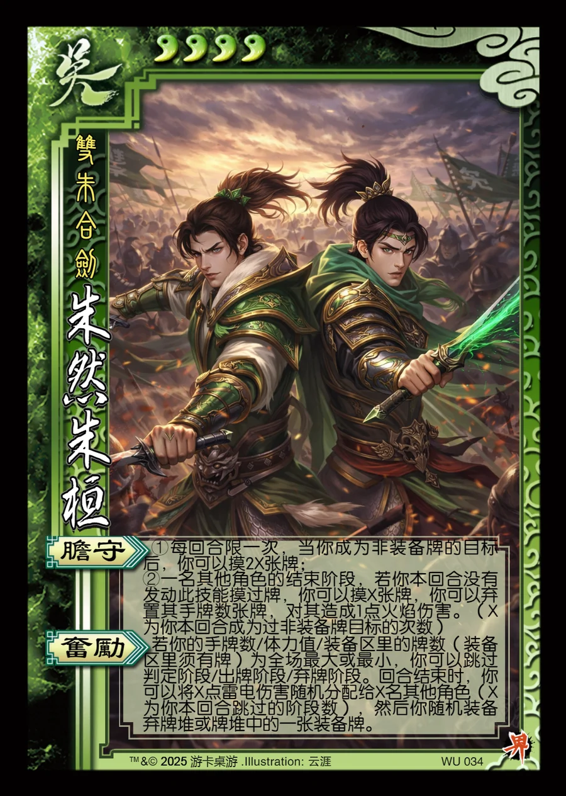

点击卡面查看大图
吴
朱然朱桓
♥4双朱合剑
胆守
①每回合限一次，当你成为非装备牌的目标后，你可以摸2X张牌；
②一名其他角色的结束阶段，若你本回合没有发动此技能摸过牌，你可以摸X张牌，你可以弃置其手牌数张牌，对其造成1点火焰伤害。（X为你本回合成为过非装备牌目标的次数）
奋励
若你的手牌数/体力值/装备区里的牌数（装备区里须有牌）为全场最大或最小，你可以跳过判定阶段/出牌阶段/弃牌阶段。回合结束时，你可以将X点雷电伤害随机分配给X名其他角色（X为你本回合跳过的阶段数），然后你随机装备弃牌堆或牌堆中的一张装备牌。